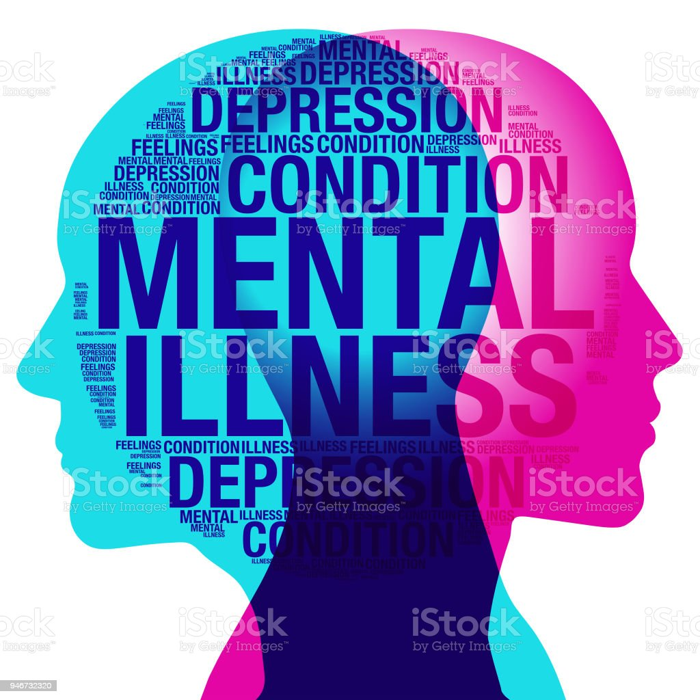

raising public awareness
about the intersection of domestic violence,trauma,substance abuse
and mental health through up-to-date analysis of research,policy and practice
Domestic violence and other lifetime trauma can have significant
mental health consequences.
Yet the system to which survivors and their turn are frequently
unprepared to address the rande of issues they face in trying to access safety and heal from
the traumatic effects of abuse.
The Prakash on Domestic violence,trauma & mental Health provides training,
support,and consultation to advocates,mental health and substance abuse
provider,legal professionals and policymakers as they work to improve agency-and and
system-level responses to survivors and their children.Our Work is survivor
defined and rooted in principles of social justice .

ABOUT US
Domestic and sexual violence and other lifetime trauma can have significant mental health and substance use related consequences,impacting a survivor's ability to access safety,heal from trauma,and pursue their life goals. The Prakash on Domestic Violence,Trauma and Mental Health(NCDVTMH)enhances agency-and system-level responses to survivors and their families through comprehensive training and technical assistance,research and evaluation,policy development and public awareness. Emphasizing an accessible,culturally responsive and sexual assault advocates,programs,and coalition,healthcare,mental health,and substance use treatment providers;legal and child welfare professionals;and local,state,and federal policymakers .
HERE FOR YOU...!!

MISSION
The Prakash on Domestic Violence, Trauma,and Mental Health
promotes survivor-defined healing ,liberation,and equity
by transforming the systems that impacting survivors of
domestic and sexual violence and their families.We envision
a society where all people are free of systemic,collective
and individual trauma.
OUR TRAINED VICTIM ASSISTANCE
SPECIALISTS ARE READY TO HELP.
P:(312)726-7020
TTY:(312)726-4110
F:(312)726-7022


The website is funded through a grant from the office of Crime, Office of Justice Programs, U.S. Department of Justice.Neither the U.S.Department of Justice nor any of its
components operate,control,are responsible for,or necessarilly endorse this website (including,without limitation,its content, technical infrastructure and policies,and any services
or tools provided).